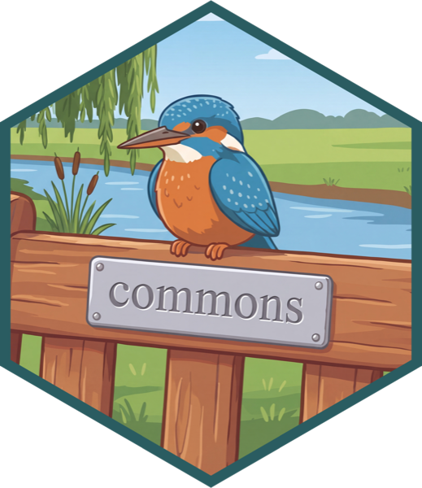
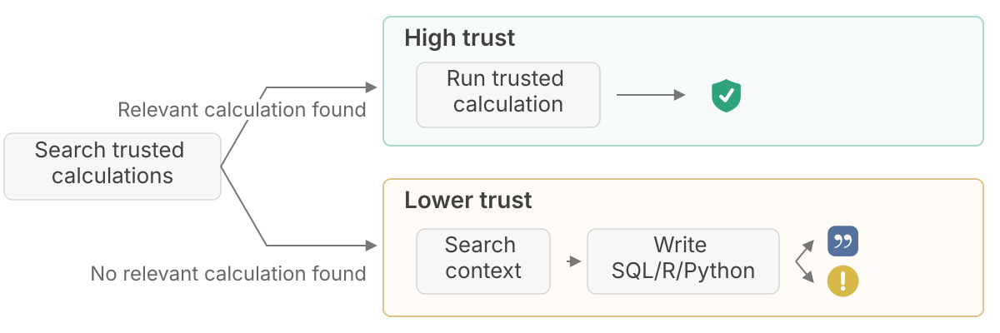

commons
An R and Python package that helps data scientists build trustworthy data analysis agents.
The package is built on ellmer, chatlas, and shinychat, Posit's open source LLM stack. You can use whatever model you want from any of the providers supported by those packages with it.
To install the R package, run:
install.packages("commons")To install the Python package from PyPI, run:
pip install commonsThe Python package is currently in a pre-release beta stage, but you can install and play around with it today, with more features arriving over the next few weeks.
Design philosophy
AI agents for data analysis can range from overly cautious and narrowly correct to wildly and confidently incorrect. commons provides a framework for you to design more trustworthy analysis agents by providing them with access to existing trusted code, while still allowing them enough flexibility to answer novel, realistic questions.
If you are a data analyst, data scientist, statistical programmer, or other data practitioner, you likely have a deep understanding of your problem domain and a collection of trusted code you depend on for your analyses and use to create apps, reports, and packages. The core idea behind commons is that we can improve an agent's correctness by giving it the right access and documentation to run this code that you have already vetted.
When answering questions, commons agents first search through a pool of trusted code. If the agent finds an appropriate piece of trusted code, it can invoke it directly, and its response displays a green shield provenance marker . If it doesn't, it will search through relevant context before writing its own SQL, R, or Python. If the agent can find trusted context that justifies its approach, it can provide a citation to it at the end of its answer, displayed with a blue provenance marker , which will be deterministically checked by commons. Otherwise, the answer displays a yellow warning provenance marker .

Notably, the agent itself does not decide how to label a response. commons instead labels answers deterministically, based on the path the agent takes to get it to its answer.
Get started
To get started with the R package, check out the introductory vignette. The package ships with an agent skill to help you hook your trusted code and context up to the agent.
To get started with the Python package, check out the introduction. (The resulting apps will look very similar regardless of whether you use R or Python—they literally share the same CSS!)